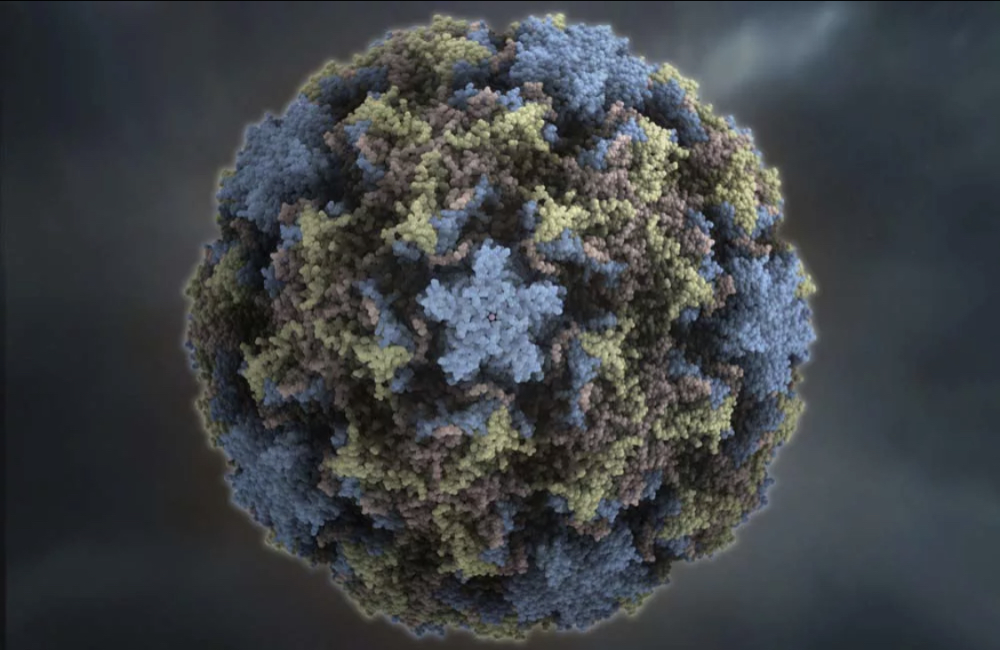

Острый ринит - воспаление слизистой оболочки носовой полости. Характерные симптомы: чихание, отделение слизи из носа (ринорея), нарушение носового дыхания. Отток слизи по задней стенке глотки вызывает кашель.
Фарингит - воспаление слизистой оболочки глотки. Для него характерны внезапно возникающие ощущения першения и сухости в горле, а также болезненность при глотании.
Тонзиллит - местные изменения в небных миндалинах чаще как проявление обострения бактериальной (стрептококковой) инфекции. Характерны интоксикация, гиперемия и отечность миндалин, небных дужек, язычка, задней стенки глотки, рыхлые наложения в лакунах.
Ларингит - воспаление гортани с вовлечением голосовых связок и подсвязочного пространства. Первые симптомы – сухой лающий кашель, осиплость голоса.
Трахеит - воспалительный процесс в слизистой оболочке трахеи. Симптомы: саднение за грудиной, сухой кашель.
Бронхит - поражение бронхов любого калибра. Основной симптом – кашель (в начале заболевания сухой, через несколько дней – влажный с увеличивающимся количеством мокроты). Мокрота чаще имеет слизистый характер, но на 2-й неделе может приобретать зеленоватый оттенок за счет примеси фибрина. Кашель сохраняется в течение 2 недель и дольше (до 1 мес.) при заболеваниях аденовирусной, респираторно-синцитиально-вирусной, микоплазменной и хламидийной природы.
Грипп
Продолжает оставаться одной из серьезных проблем здравоохранения во всех странах мира. Болезнь распространена повсеместно и может проявляться в виде единичных случаев заболевания, вспышек, эпидемий и даже пандемий. Для нашей страны характерен эпидемический подъем заболеваемости гриппом с ноября по март.
Грипп является зооантропонозной инфекцией, что подразумевает поражение не только людей, но и животных. В частности, вирусами гриппа A могут заражаться млекопитающие и птицы, а передача возможна как от человека к животным, так и от животных к человеку.
Выражается грипп в виде трахеита.
Начало болезни обычно острое, может быть озноб, ломота в мышцах, костях и суставах, головная боль и сильное недомогание. Температура тела практически с самого начала болезни быстро повышается до лихорадочных значений, а сама лихорадка обычно длится 3—4 дня, но может сохраняться и до 6-ти суток.
Птичий грипп (H5N1)
Реплицируется в кишечнике водоплавающих перелётных птиц, при этом дикие птицы легко его переносят, а домашние — тяжело болеют с летальностью в 90 %. Болезнь передаётся через фекалии и может инфицировать млекопитающих, в том числе свиней и человека. Человек заражается при контакте с птицей. Известно более 300 случаев заражения с летальностью в 60 %. Также установлено два случая заражения от человека к человеку.
Начало болезни такое же, как и у обычного гриппа, но на 2-й—3-й день развиваются симптомы ларингита, бронхита и бронхиолита. В это же время у большинства больных развивается вирусная пневмония. Также у большинства возникают боли в животе, рвота и диарея.

Свиной грипп (H1N1)
В отличие от обычного гриппа может вызывать повреждение альвеолярного эпителия с развитием острого респираторного дистресс-синдрома и пневмонии. Также может вызывать диарею.
Одна из эпидемий свиного гриппа была в 2009 году в США и Южной Америке, после чего вирус распространился и на другие континенты, попав в том числе и в Россию. Болезнь передаётся воздушно-капельным путём, а болеют обычно люди молодого возраста (до 30 лет). В 0,9 % случаев болезнь оказывается летальной.
Подвержены тяжелому течению гриппа маленькие дети, люди с хроническими заболеваниями, избыточной массой тела, беременные, пожилые.

Парагрипп
Обычно вызывает ларингит, поражая преимущественно цилиндрический эпителий в области гортани. В большинстве случаев парагрипп вызывает воспаление верхних дыхательных путей, но может вызывать и такие достаточно тяжёлые заболевания как круп, бронхит, пневмония среди старшего поколения и у людей с иммунодефицитами. У взрослых температура тела как правило сильно не поднимается, но у детей может быть высокой. Болезнь может длиться до 2 недель.
Вирусы парагриппа наиболее распространены в период с поздней весны по раннюю зиму, но при этом имеют разную сезонность по сравнению друг с другом.
Аденовирусная инфекция
Преимущественно поражает глотку, миндалины и конъюнктивы. Также сопровождается лихорадкой, а лимфатические узлы во время болезни могут увеличиться в размерах. У детей температура тела может повышаться до 39—40 °C, а сама лихорадка может длиться от 2-3 дней до 2 недель. Инфекция может также сопровождаться болями в животе, рвотой и жидким стулом.
Распространяется как воздушно-капельным путём, так и через фекалии. Заражение может произойти через еду, воду и бытовые предметы, если те были контаминированы заражёнными фекалиями. Болеют в основном дети до 5 лет, при этом заболеваемость особенно высока в детских коллективах после их формирования. У большинства же взрослых есть антитела к данной инфекции.

Риновирусная инфекция
Распространена в холодном и умеренном климате, чаще проявляется осенью и зимой. В народе симптомы заболевания более известны как простуда.
Риновирусная инфекция преимущественно поражает слизистую оболочку носа. Ранее считалось, что риновирусы поражают только полость носа (отсюда и название), но последующие исследования показали, что они обнаруживаются и в остальных отделах дыхательных путей, в том числе в альвеолах. Инфекция характеризуется сильным насморком с фарингитом, а температура тела обычно не поднимается или поднимается до субфебрильных значений. Риновирусы не вызывают интоксикации, болезнь обычно длится 5—7 дней, а насморк может сохраняться на протяжении 2 недель.
К осложнениям риновирусной инфекции, обусловленным присоединением бактериальной флоры, относятся отиты, воспаление придаточных пазух носа (синуситы), пневмония.
Коронавирусная инфекция
Течение болезни очень похоже на риновирусную инфекцию, а клинически болезни неотличимы друг от друга. У маленьких детей может поражать нижние дыхательные пути с развитием бронхита, реже — пневмонии, а некоторые коронавирусы могут вызывать диарею у детей. У взрослых может протекать в виде распространённой простуды. Грозным осложнением является пневмония.
Передаётся инфекция как воздушно-капельным путём, так и через фекалии. При передаче через фекалии может вызывать острый гастроэнтерит, сопровождающийся болями в животе, рвотой и диареей.
Последний новый вид коронавируса SARS-CoV-2 получил широкое распространение во всем мире, в связи с чем ВОЗ объявила о начале пандемии COVID-19 в 2020 году.
Инфекция SARS-CoV-2 может варьироваться от асимптоматической или лёгкой до тяжёлой с риском смерти. Симптомы лёгкого заболевания могут включать лихорадку, кашель, больное горло, потерю обоняния, головную боль и ломоту в теле. При средней тяжести заболевания вовлечёнными оказываются нижние дыхательные пути. Тяжёлое заболевание и его осложнения чаще развиваются у людей с сопутствующими заболеваниями. Особенностью COVID-19 является то, что он может приводить к повреждениям различных органов от почек до мозга, что редко наблюдается среди инфекций, вызываемых другими респираторными вирусами.
Респираторно-синцитиальная инфекция
Вызванная респираторно-синцитиальным вирусом человека инфекция (РС-инфекция) поражает преимущественно нижние дыхательные пути, включая мелкие бронхи и бронхиолы. Температура тела обычно поднимается до субфебрильных значений. Характеризуется кашлем, в том числе приступообразным, а дыхание может быть затруднённым. В лёгких могут прослушиваться хрипы, могут развиться бронхит или бронхиолит с обструктивным синдромом. Бронхообструктивный синдром и вторичные бактериальные инфекции могут приводить к смерти. Болезнь обычно длится от 2 до 7 дней, но сухой кашель может сохраняться до 2 недель.
Тяжёлая форма болезни может протекать у детей до 1 года, при которой на 2—7-й день болезни развивается бронхиолит с последующим приступообразным кашлем с вязкой мокротой, который может переходить в рвоту. У детей старшего возраста и взрослых болезнь обычно протекает в лёгкой форме. Среди детей респираторно-синциальный вирус также является одной из главных причин отита, являясь возбудителем примерно в 15 % случаев возникновения осложнения.
Метапневмовирусная инфекция
Человеческий метапневмовирус был обнаружен относительно недавно — в 2001 году, однако к тому моменту среди людей циркулировал уже как минимум 50 лет. Относится к тому же семейству, что и респираторно-синциальный вирус, и схож с ним по геному. Метапневмовирусная инфекция поражает как верхние дыхательные пути, так и нижние. Может вызывать лихорадку, кашель, заложенность носа, насморк, боль в горле, а также одышку, затруднённое дыхание и гипоксию. Может развиться в бронхит, бронхиолит или пневмонию.
Тяжёлые случаи инфекции могут возникать у детей, пожилых людей и у людей с хроническими заболеваниями, такими как бронхиальная астма, эмфизема лёгких и иммунодефициты.
Большинство детей переносят метапневмовирусную инфекцию в возрасте до пяти лет. В странах с умеренным климатом вирус наиболее активен поздней зимой и весной.
Энтеровирусная инфекция
Вирусы Коксаки, эховирусы и некоторые другие энтеровирусы одновременно являются и кишечными, и респираторными вирусами. У большинства больных инфекция протекает бессимптомно, может ограничиться внезапно поднявшейся до высоких значений температурой, у остальных может начаться с похожих на грипп симптомов: лихорадки, головной боли и боли в мышцах. Также могут возникнуть рвота и диарея. Со стороны респираторной системы в части случаев болезнь может характеризоваться ринитом, фарингитом и ларингитом, в то время как у детей может развиться круп.
Обычно энтеровирусная инфекция протекает в лёгкой форме, однако у некоторых людей может перерасти в серьёзное заболевание. Помимо основных проявлений энтеровирусы могут также вызывать вирусемию, миозит, миокардит, поражение мозга и периферической нервной системы, менингит, гепатит и пневмонию. Тяжёлое поражение сердечной мышцы или центральной нервной системы может приводить к летальному исходу.
Энтеровирусы передаются как через фекалии, так и воздушно-капельным путём, однако основными источниками заражения являются вода и пища, в частности овощи. В странах с умеренным климатом заболеваемость энтеровирусной инфекцией выше летом и осенью.
Реовирусная инфекция
Первый представитель рода реовирусов выделен в 1954 году. Распространяется в основном среди детей, к 20—30 годам примерно половина людей успевает перенести реовирусную инфекцию. Поражает глотку, но также затрагивает пищеварительную систему, поэтому может быть схожа с энтеровирусной инфекцией. Температура обычно повышается до субфебрильных значений, высокой бывает редко. У детей может спровоцировать тошноту, рвоту и жидкий стул.
Бокавирусная инфекция
Бокавирус человека был обнаружен в 2005 году и недостаточно изучен. Достоверно не известно, является ли вирус действительно патогенным. Проявляется легкой катаральной и кишечной симптоматикой.
Практически все дети переносят бокавирусную инфекцию в возрасте до двух лет. Инфекция может возникать в течение всего года, однако чаще возникает в зимнее и весеннее время.
Пневмококковая инфекция
Возбудитель — бактерия Streptococcus pneumoniae («пневмококк»).
Эта бактерия может поражать практически все органы, вызывая отиты, синуситы, конъюнктивиты, бронхит, пневмонию, менингит, сепсис.
Симптомы пневмококковой инфекции зависят от локализации возбудителя. Начальные симптомы, как и при других дыхательных инфекциях — внезапный подъем температуры, озноб, кашель, одышка.
Подвержены тяжелому течению пневмококковой инфекции дети первых двух лет жизни и взрослые в возрасте от 60 лет, страдающие хроническими заболеваниями легких.
Гемофильная инфекция
Возбудитель - бактерия Haemophilus influenzaе (гемофильная палочка).
Заболевание начинается с заложенности носа, боли в горле, конъюнктивита. В случае генерализации инфекции гемофильная палочка становится причиной развития пневмонии, септицемии, эпиглоттита, септического артрита, остеомиелита, миокардита, менингита.
Летальность вследствие гнойного менингита достигает 16-20% (даже при своевременной диагностике и правильном лечении!).
Поражает гемофильная инфекция преимущественно детей до пяти лет. Зачастую именно у них протекает тяжело с поражением верхних дыхательных путей, нервной системы, развитием пневмонии.